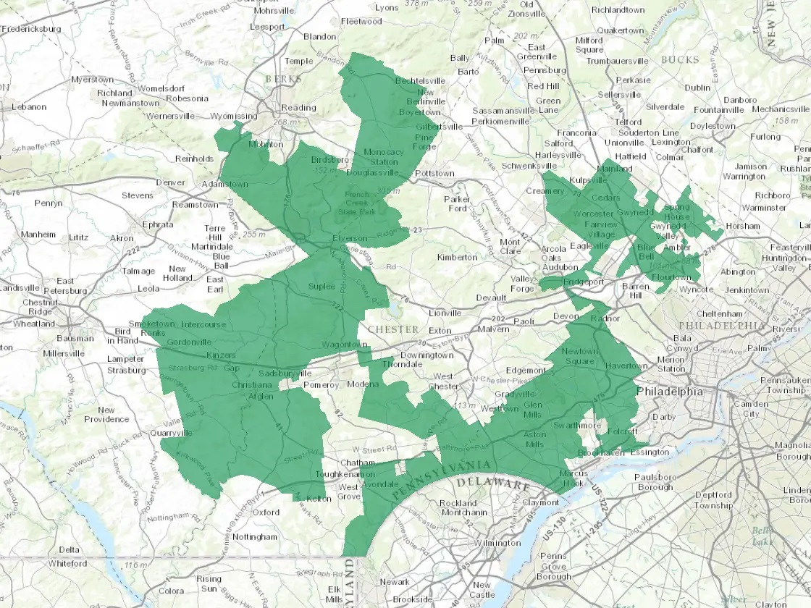

After the 2020 census results are released, all states in the US will be redrawing district maps based on new population
data. Our goal in with this research is to first make shape files of voting precincts more transparent and accessible. Many
states in the US do not currently make precinct shape files publicly available, which are often the building blocks used
by state legislatures to draw district maps. By making data public and accessible in more formats, we will help
democratize the redistricting process.
We also aim to use voting and geographic data to create a basis for contesting
a given district map as gerrymandered. Many measurements of
gerrymandering are flawed. Take for example the Pennsylvania Seventh District, aka "Goofy kicking Donald Duck".

This disctrict seems gerrymandered because it is a very nonstandard, noncompact shape, which indicates to us that someone went out of
their way to group certain areas together that are the opposition party, a technique called
packing. Thus one technique of measuring
gerrymandering, the
Polsby-Popper test measures the
compactness of a shape. Arizona used this test in its 2000 redistricting commission with the idea that low compactness makes
a stronger case for gerrymandering. This test gels well with the "you-know-it-when-you-see-it" principle, but it can be misleading
and hide nuance. For example, a complication arises when respecting natural features. Additionally, many of the most offensive
district shapes came from the time of hand-drawing, but computers have made it possible to ensure similar election results while
maintaining 'reasonable' looking shapes. Even if you accept that the Polsby-Popper test detects gerrymandering, there is the issue
of the Voting Rights Act. This act and subsequent supreme court cases establish that district maps can't disadvantage voters
because of their race. Thus, there could be ambiguity about whether a district is built to 'pack' opposition voters, or whether it is
designed to create an opportunity district for a minority racial population.
The Polsby-Popper test is but one example of measurements designed to define gerrymandering that face serious flaws. What I find to
be the common demoninator amongst these tests is that they try to tell the whole story by looking at one aspect of the data, and they
often are based on either geographic or election data, but not both. I am very excited to be working on this research, because I
believe it avoids this trap and still provides a solid basis for claiming a map to gerrymandered using outlier analysis. We are
using a method developed by the
Metric Geometry and Gerrymandering Group. Using a Markov Chain Monte Carlo modeling, this
method creates a large random sampling of district maps. You can find a more detailed mathematical explanation
here.
This by simulating hypothetical elections based on recent election data on all the maps in this large sample, we can create a histogram
to show the liklihood of different election results. We can then compare the map drawn by the legislatures and see where they fall on
this histogram. If the election results of the legislature's map are an outlier, that builds a strong case that their map was designed to
specifically advantage one part.